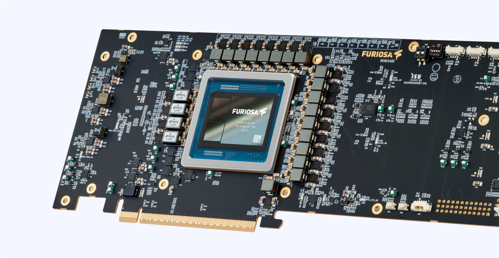

FuriosaAI RNGD#
RNGD는 inference를 깊은 학습을 가속화하기 위하여 디자인된 NPU (NPU)의 FuriosaAI입니다. NPU는 기본적으로 high-performance 큰 언어 모형 (LLMs), multi-modal 모형 및 vision-based 신경 네트워크를 포함하여 워크로드의 넓은 스펙트럼을 지원합니다.


RNGD는 Tensor Contraction Processor (TCP)를 구현합니다. TCP는 최신 딥 러닝의 핵심 수학 연산인 복잡한 텐서 축소 작업을 하드웨어에서 직접 실행하도록 설계된 새로운 아키텍처입니다. 이 패러다임을 활용하여 NPU는 컴퓨팅 활용률과 에너지 효율성을 모두 극대화합니다. TSMC의 5nm 공정 노드에서 제조되고 1.0 GHz 클럭 주파수로 작동하는 RNGD는 다양한 정밀도 형식에서 높은 성능을 제공하며, BF16의 경우 256 TFLOPS, FP8의 경우 512 TFLOPS, INT8의 경우 512 TOPS, INT4의 경우 1024 TOPS의 성능을 제공합니다. 메모리 병목 현상을 방지하면서 이러한 컴퓨팅 처리량을 유지하기 위해, 칩은 1.5 TB/s의 총 메모리 대역폭을 제공하는 두 개의 HBM3 모듈을 통합합니다. 또한 PCIe Gen5 x16를 통해 호스트와 인터페이스하여 낮은 지연 시간 데이터 이동을 보장합니다.
핵심 컴퓨팅 기능 외에도, RNGD는 Kubernetes와 같은 클라우드 네이티브 및 다중 테넌트 환경과 원활하게 통합됩니다. Single Root I/O Virtualization (SR-IOV)를 구현하여 시스템은 단일 물리적 칩을 2개, 4개 또는 8개의 독립적인 NPU 인스턴스로 분할할 수 있습니다. 각 가상 인스턴스는 엄격한 하드웨어 격리 환경에서 작동하며, 자체 전용 컴퓨팅 코어와 사설 메모리 대역폭을 사용하여 동일 위치에 있는 워크로드에 대해 결정적인 latency 성능을 보장합니다.
TCP 아키텍처와 RNGD 구현의 상세한 기술 분석을 위해 다음과 같은 출판물을 참조하십시오.
건축 |
텐서 컨트랙션 프로세서 |
프로세스 노드 |
TSMC 5nm |
주파수 |
1.0 GHz |
BF16 |
256 TFLOPS |
FP8 |
512 TFLOPS |
INT8 |
512 TOPS |
INT4 |
1024 TOPS |
메모리 대역폭 |
HBM3 1.5TB/s |
기억력 |
HBM3 48GB |
On-Chip SRAM |
256MB |
: 인터커넥트 인터페이스 |
PCIe Gen5 x16 |
열 용액 |
수동성 |
열 설계 전력 (TDP) |
180W |
전력 연결기 |
12VHPWR |
양식 요인 |
PCIe dual-slot full-height 3/4 길이 |
Multi-Instance 지원 |
8 |
가상화 지원 |
Yes |
SR-IOV |
8 가상 기능 |
ECC 메모리 지원 |
Yes |
루트 오브 트러스트와 함께 Secure Boot를 사용합니다. |
Yes |